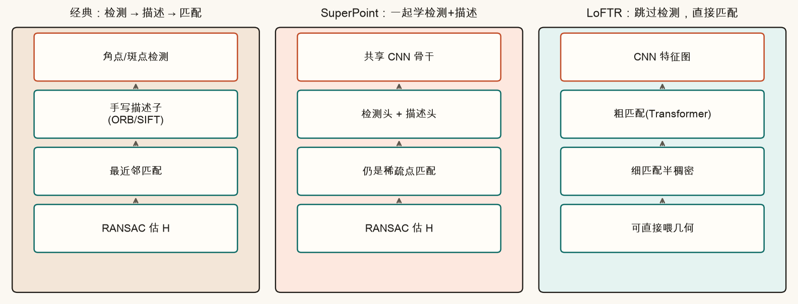
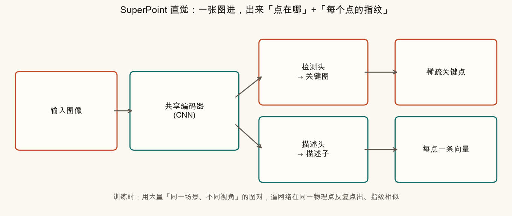
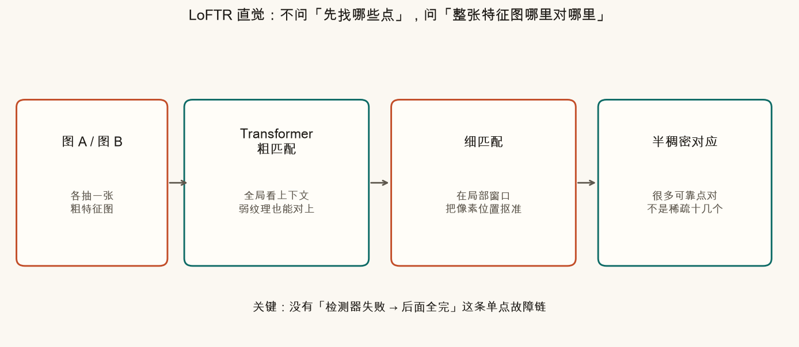
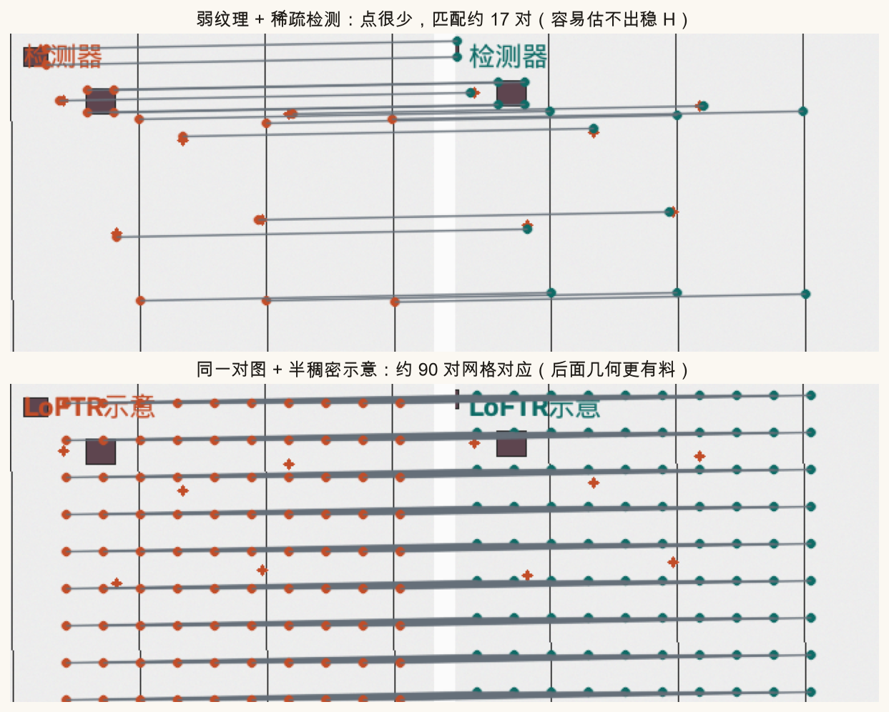
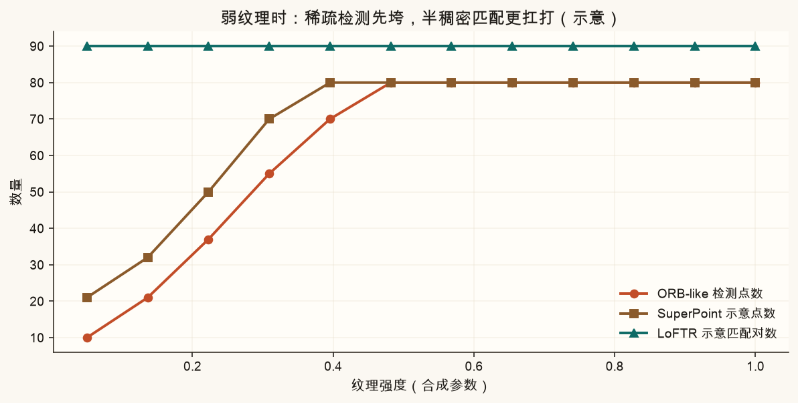
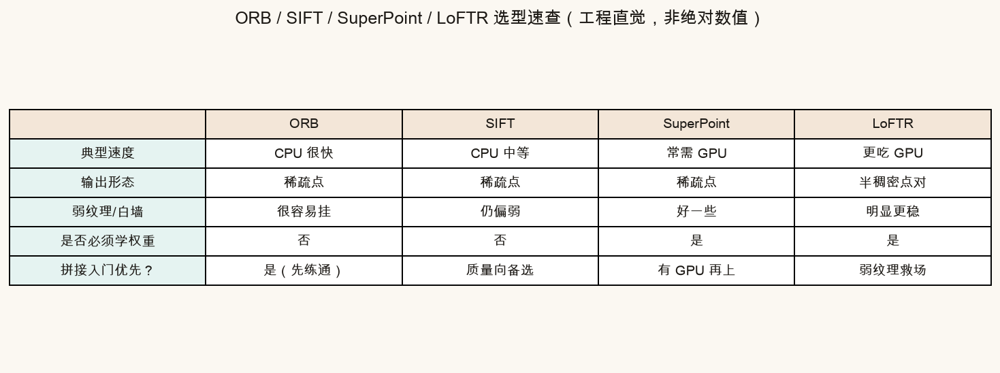
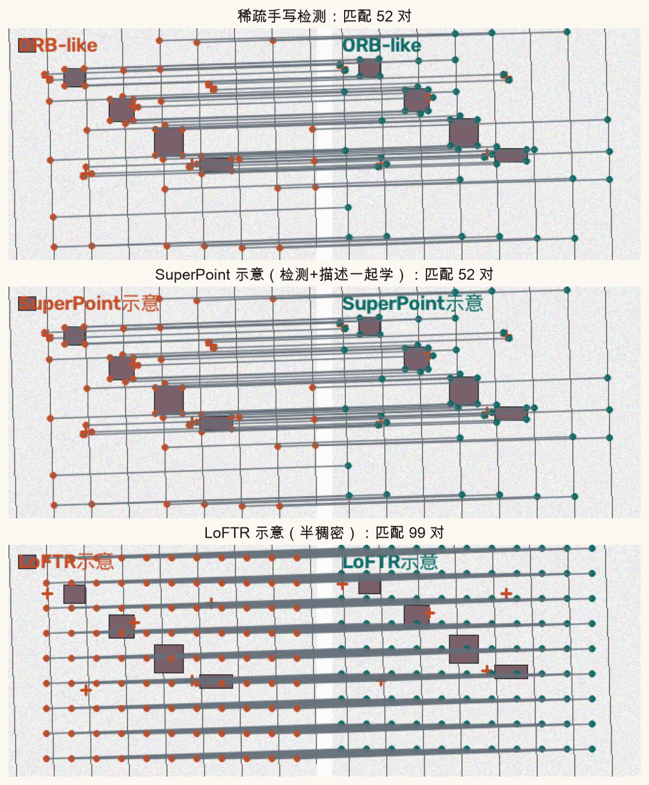
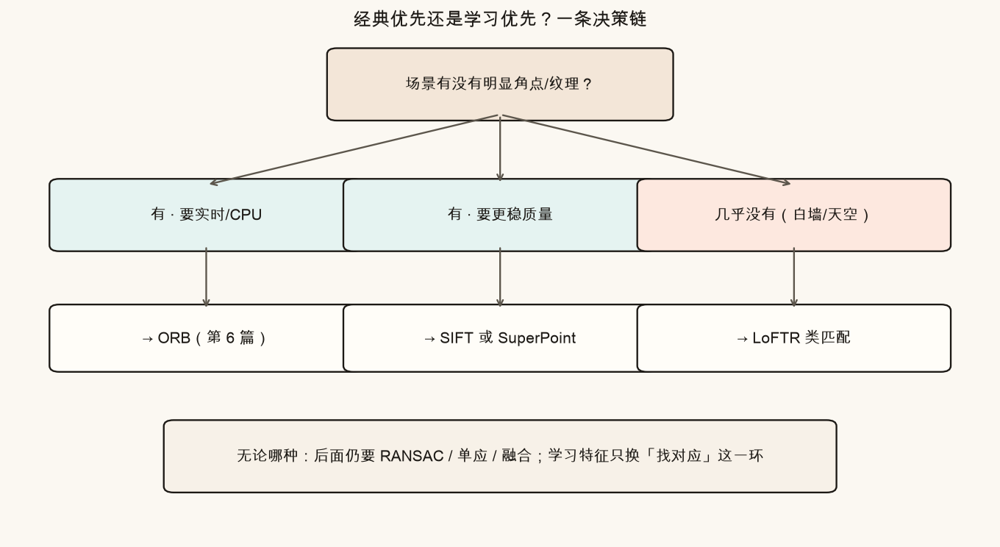
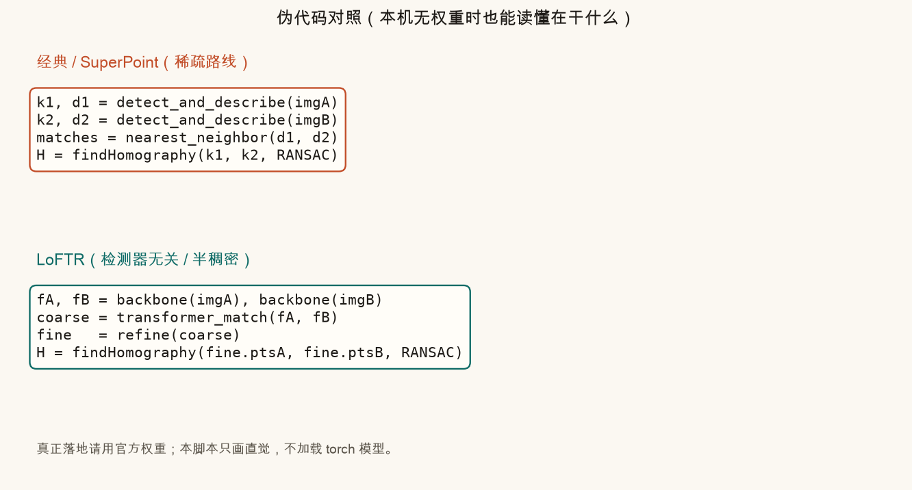

第 13 篇 · 图片拼接收尾 · 约 55 分钟
前面用 ORB / SIFT 找对应点，本质是「人手写规则」。这一篇换一种思路：让网络从大量图对里学会哪里该点、指纹该长什么样；以及更激进的一步——干脆不先检测点，直接在两张特征图上做半稠密匹配（LoFTR）。本篇以概念与合成示意图为主，不要求本机装好 torch 权重。
拼接流水线里，「找对应」是前半截的心脏：对应点够多、够准，后面的单应、BA、融合才有料可吃。ORB 快、SIFT 稳，但有两类场景经常让人手写特征难受：
深度学习特征的承诺很直白：用成千上万对「同一场景不同视角」的图训练，让网络自己总结「什么算好点、什么算好指纹」。它不是换掉整条拼接流水线，只是替换「检测 + 描述 + 匹配」这一环。

若你还没写过 ORB 匹配连线：先把第 6 篇当「手工版」，本篇当「学习版对照」。概念是同一张考卷，换了答题工具。
把两张照片想成两份「寻宝图」。对齐它们，需要在两张图上圈出同一批地标，并确认「这个圈」对应「那个圈」。
训练时常用的监督信号（白话）：
同一 3D 点投影到两张图 → 检测位置应重复出现，描述向量应相似
网络并不「懂几何」，它只是在巨大样本上拟合这个目标。泛化好坏，取决于训练数据是否覆盖你的拍摄条件。
SuperPoint（Detone 等人，2018）把检测和描述塞进同一个卷积神经网络：共享编码器，再分出两个头。
它解决的痛点是：传统流程里「检测器用一套启发式、描述子用另一套启发式」，两者并不为彼此优化。SuperPoint 用自监督 / 合成单应等方法，让两头一起学，在视角变化下往往有更好的重复性（同一物理点更容易再次被点到）。

输出形态仍是稀疏点，和 ORB/SIFT 同一家族。差别在「点与指纹从哪来」。工程上常配 GPU；也有人用 TorchScript / TensorRT 部署。本课不下载权重，用示意脚本代替真实前向。
LoFTR（Sun 等人，CVPR 2021）走得更远：Detector-Free——不再先找兴趣点。做法是：
它主要解决：弱纹理、重复纹理时检测器失灵或乱点的问题。白墙上几乎没有角，但墙与墙的相对位置、门框边缘的弱结构，仍可能在特征图的全局注意力里对上。



下表是工程选型用的直觉，不是论文跑分。真实毫秒数取决于分辨率、实现与硬件。

| 方法 | 一句话 | GPU | 弱纹理 |
|---|---|---|---|
| ORB | CPU 实时练手首选 | 不需要 | 差 |
| SIFT | 经典质量向稀疏特征 | 不需要 | 偏弱 |
| SuperPoint | 可学习的「检测+描述」 | 强烈建议 | 好一些 |
| LoFTR | 半稠密、检测器无关 | 基本必需 | 明显更稳 |

左侧模拟「稀疏检测」：纹理越低，橙点越少。右侧模拟「半稠密网格匹配」：纹理低时仍保留较多青线。这是浏览器里的玩具，不是真网络。
模式 0 / 1 / 2 分别对应 ORB-like、SuperPoint 示意、LoFTR 示意。SuperPoint 示意在弱纹理时会「多留一点均匀点」，模拟学出来的重复性；LoFTR 示意则直接铺网格。

学习特征换的是「对应从哪来」。鬼影、曝光跳变、近景视差（第 10–11 篇）不会因为换了 SuperPoint 就消失。BA（第 12 篇）仍然有用：多图一起纠偏，和特征来源正交。

# 稀疏（ORB / SIFT / SuperPoint 同一骨架）
k1, d1 = detect_and_describe(imgA)
k2, d2 = detect_and_describe(imgB)
matches = nearest_neighbor(d1, d2) # + Lowe 比率等
H = cv2.findHomography(pts1, pts2, cv2.RANSAC)
# LoFTR 骨架（示意）
fA, fB = backbone(imgA), backbone(imgB)
coarse = transformer_match(fA, fB)
fine = refine(coarse) # 半稠密点对
H = cv2.findHomography(fine.A, fine.B, cv2.RANSAC)本脚本不需要 torch。在系列根目录：
source .venv/bin/activate
MPLCONFIGDIR=/tmp/mpl-cache python code/ch13_learned.py成功时终端打印「自检通过」，并写出 ch13_pipelines.png、ch13_superpoint.png、ch13_loftr.png、ch13_weak_texture.png、ch13_compare_table.png、ch13_selection.png、ch13_method_gallery.png、ch13_texture_curve.png、ch13_pseudocode.png，以及你的 ch13_my_texture.png / ch13_my_matches.png。
打开 code/ch13_learned.py 顶部参数。只影响 ch13_my_*.png。
TEXTURE_LEVEL 改成 0.08，METHOD = "orb"，运行。看 ch13_my_matches.png 连线是否很少。METHOD = "loftr"，再运行。网格对应应明显更多。TEXTURE_LEVEL = 0.8，METHOD = "superpoint"，对比富纹理下三种方法差异变小。SHIFT_X / SHIFT_Y（例如 40 与 15），确认匹配线仍大致平行（合成位移已知）。先自己答，再展开。
都像：都是稀疏兴趣点 + 描述子再匹配。差在点与指纹是手写规则还是网络学出来的；SuperPoint 通常更吃 GPU，弱纹理/视角变化上往往更稳。
意思是不先跑兴趣点检测，而直接在特征图上做（半）稠密匹配。主要救弱纹理、重复纹理等「检测器没点 / 乱点」的场景。
优先 ORB（或同类 CPU 特征）。SuperPoint / LoFTR 虽强，但没 GPU 时延迟与功耗通常不划算；先保证流水线实时跑通。
不会。学习特征只改善「找对应」；曝光要补偿、视差会让单应失效，仍要靠第 10–11 篇的思路（或更复杂的多平面/网格变形）。
为了零基础环境也能跑通：用合成图建立直觉。真要上线，再按官方仓库装 torch、下权重、对真实照片跑前向。
图片拼接线到这里收束。下一条主线进入光流：像素如何在两帧之间「流动」，以及为什么只看一条边会有孔径问题——这与防抖、跟踪共用底座。